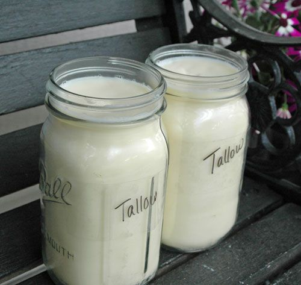

classes of food
classes of food home pageThe classification of food is based on macronutrients and micronutrients. Macronutrients usually include water, fiber, fats, proteins, and carbohydrates. They are needed for our bodies in large quantities. Micronutrients include vitamins and minerals. They are needed in our bodies in much fewer quantities.
Carbohydrates
Carbohydrates, or carbs, are sugar molecules. Along with proteins and fats, carbohydrates are one of three main nutrients found in foods and drinks. Your body breaks down carbohydrates into glucose. Glucose, or blood sugar, is the main source of energy for your body's cells, tissues, and organs.
Carbohydrates include essential nutrients like sugars, starches and fiber. Your body uses carbs to make glucose (blood sugar) for energy.
- Glucose
- Starch
- Fiber
- Galactose


Proteins
naturally occurring, extremely complex substance that consists of amino acid residues joined by peptide bonds. Proteins are present in all living organisms and include many essential biological compounds such as enzymes, hormones, and antibodies.
Proteins are important nutrients that contain the essential and non-essential amino acids which provide the body with energy.
- Egg
- Structural
- Enzymes
- Hemp

fats and oil
What Are Fats and Oils? Some people think that fats and oils are different things. But in reality, they share a common chemical structure and similar properties. The difference is that those that stay solid at room temperatures are called fats while those that stay liquid at room temperatures are called oils.
The oil and fat products used for edible purposes can be divided into two distinct classes: liquid oils, such as olive oil, peanut oil, soybean oil, or sunflower oil; and plastic fats, such as lard, shortening, butter, and margarine. The physical nature of the fatty material is unimportant for some uses, but the consistency is a matter of consequence for other products.
- Butter
- Tallow 
- lard
- Canola oil

Vitamins
Vitamins and minerals are micronutrients required by the body to carry out a range of normal functions. However, these micronutrients are not produced in our bodies and must be derived from the food we eat. Vitamins are organic substances that are generally classified as either fat soluble or water soluble.
Vitamins and minerals are organic compounds that are required in very small amounts, for a variety of metabolic processes.
- Vitamin A
- iron
- Calcium
- Vitamin D


Minerals
A natural substance with distinctive chemical and physical properties, composition, and atomic structure. The definition of an economic mineral is broader, and includes minerals, metals, rocks and hydrocarbons (solid and liquid) that are extracted from the earth by mining, quarrying and pumping.
An element or chemical compound that is normally crystalline and that has been formed as a result of geological processes.
- Carbonates
- Native elements
- Silicates
- Magnesium


Water
Water is the most important component of life, which is needed by human beings and needed for animals, birds, trees, etc. It exists in three different forms on the earth, i.e., solid, liquid, and gas. Water exists in the form of ice (solid), and water vapour (gaseous) forms.
Water is a precondition of life. Besides various uses of water, it is mainly used in irrigation as India is an agricultural.
- Potable water
- Fresh water
- Brackish water

 Salt water
Salt water